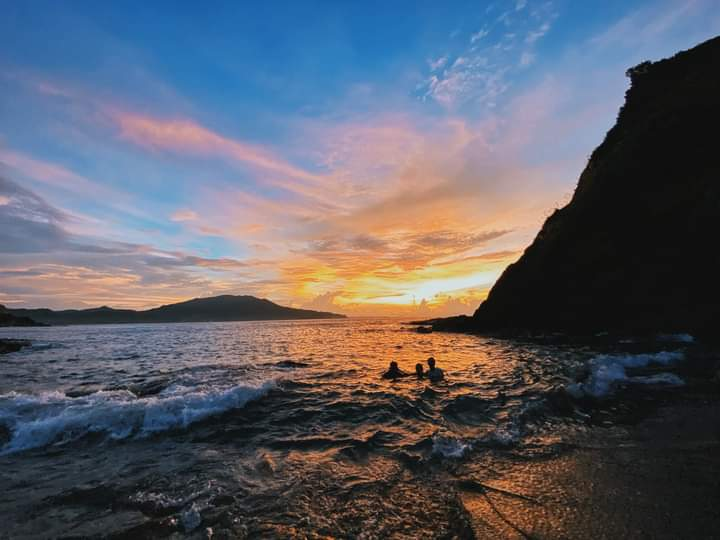

Welcome to Claveria, Cagayan!
Home
SentinelaCove
BlueLagoon
PataLighthouse
SentinelaCove
Looking for a beach sans the overcrowding of tourists? The Sentinela Beach in Claveria, Cagayan is the perfect sun and beach getaway for you! The beach is flanked with rock formations giving you that rugged beauty vibe as you walk along its fine sand. Swim with friends and be rejuvenated by its cool waters during summer. Immerse yourself completely and feel at peace as you listen and watch the water crash against the rocks and reach the shore. Tourists usually stay longer and enjoy the golden hours pass by and then watch the beautiful sun set to cap off their visit.
